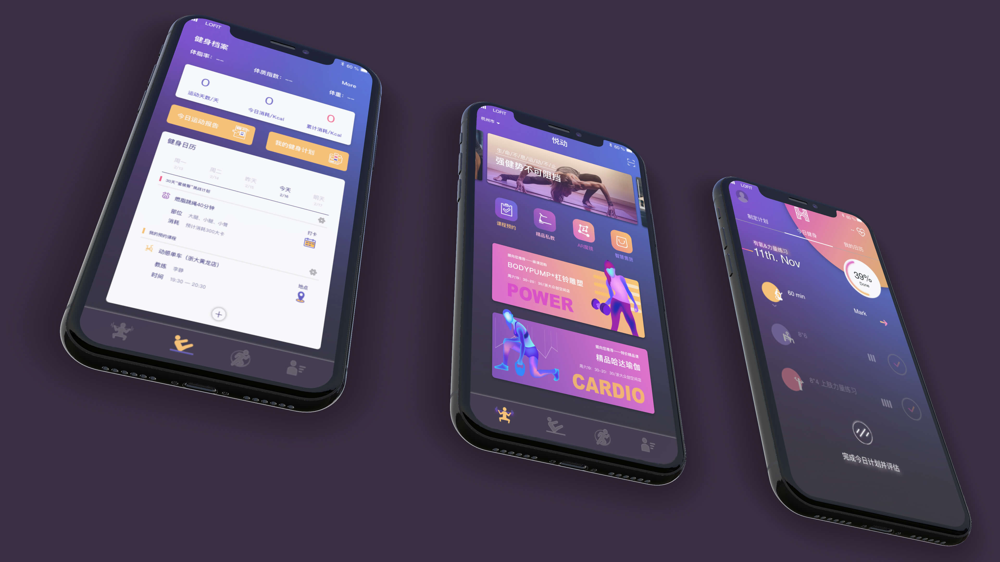
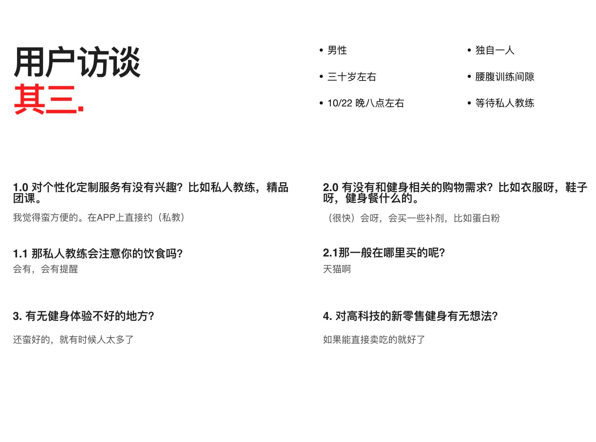

UI Design
User Research
Huangyuanxuan
Zhangxue
Liaoqian
服务设计课程汇报
Axure
Principle
AI
About the Background
本项目为2017年浙江大学服务设计课程汇报，主题为提交一个新零售场景下的服务设计，可包括商业规划书、体验店、app等多种设计成果展示。我们的作品选是基于新零售场景下自助健身房的再设计。展示成果为APP原型和商业策划，在团队中本人负责最终的效果展示和前期用户研究。
Our work is based on the redesign of the self-service gym in the new retail scene.The results of the demonstration are APP prototype and business planning. I am responsible for the final effect demonstration and user research in the team.

The Challenge
挑战
新零售的本质仍然是零售，在线上流量越来越昂贵的当下，我们需要从更多的渠道获客。同时，由于经济的发展和时代的进步，用户在购买时，更倾向于高品质、个性化的商品，同时追求更加便捷的服务。
- 更快、更好的服务体验
- 基于数据驱动设计，提高门店对用户的感知能力和对供应链的把控能力
- 最终目的：提升效率、降低成本。
How We Solve
我们通过实地走访了杭州滨江区、西湖区的几家口碑较好的自助式健身房，发现很多店面内都有智能手环，ar训练魔镜这样的科技设备，但是在平时的使用深度不够。没有私教的会员平时最喜欢在健身房消费的商品是操课，但是选择的目的性并不明确，不知道什么适合自己，饮食上要注意什么。
为此我们设计了乐动——一款智能的自助健身房门店APP，通过搜集健身会员在健身房留下的数据（运动时间、身体检测、体型姿态），结合用户自己的规划智能制定计划。推荐给用户适合他本人的操课团购和饮食商品。减低了门店的运营成本，也提高了会员的体验。
Research
Hypothesis
我们选择健身行业作为新零售的新领域，因为喜欢健身的人群一般有较良好的消费能力和更新的需求。为了验证是否是伪需求，并分析需求间的逻辑和优先级，我们进行了初步的调研。结合“TalkingData-运动健身人群画像洞察报告”，我们推定想法可行，健身领域的消费转型即将来到：
- 我们正进入个性化消费时代
- 健身行业即将迎来拐点
- 体验、效率、成本的三大优化，让未来小型零售化的健身模式拥有巨大想象空间

Personas
用户画像
经过进一步需求归类，初步得出了我们的核心用户画像——城市白领女性。愿意购买此这类健身产品的用户都由什么内外因影响而做的决策？
- 内因：女性用户对自己身材的敏感。
- 内因：运动健身人群的注重生活质量，饮食方面限制较多
- 内因：对新鲜事物的接受度更高，乐于尝试、打卡。
- 外因：整洁明亮的环境
- 外因：合理的价格
Interviews
用户访谈
在一个周六晚上，我们来到了杭州滨江区的乐刻自助健身房，采访了六位会员（4女2男），问题主要围绕五个层面。通过实地的用户采访，主要想对影响用户的内外因素进行一个重要性的排序
- 大家对不同的自助式健生房的体验感觉都差不多
- 大家都差不多的情况下，价格和距离依然是决定性的因素
- 六个会员都会有消费过操课，喜欢这种更灵活的辅导训练
- 不足：前期问题设计的时候没有考虑好如何引导顾客回答，感觉访谈每个问题没说几句话就完事了

System
Customer Journey
用户站点地图
我们用手机记录了几个顾客进入健身房以后一系列的接触点
- 当健身没有指导，出现问题时时体验降低
- 当体验智能运动镜子时体验良好
- 休息区没有什么食物可买，饮水机总没水
- 当智能设备出现故障时体验下降
Systeam Design
商业规划
根据前面得到的体验待改善的接触点我们重新设计了新的理想状态的顾客体验流程

Interface Design
Look & Feel
界面以及外观

Core Features